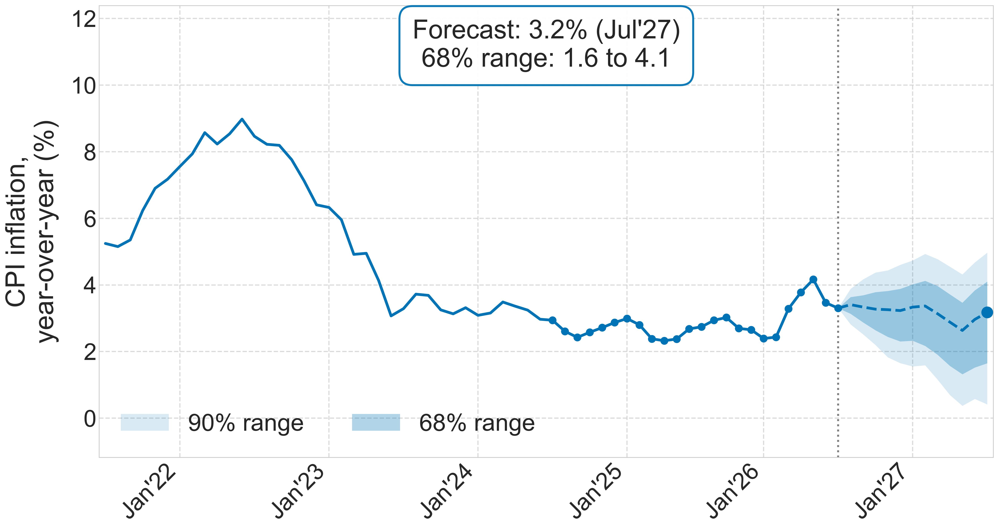
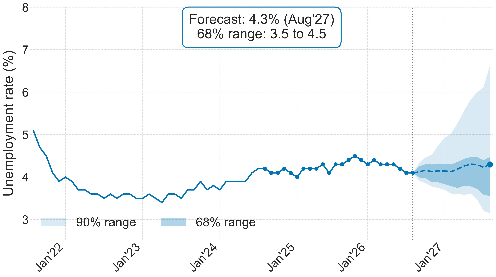
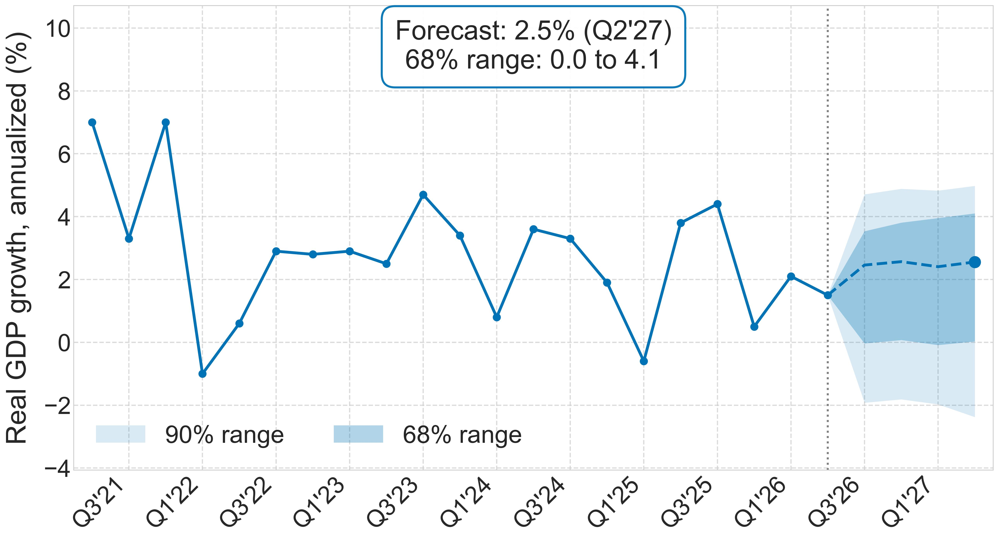
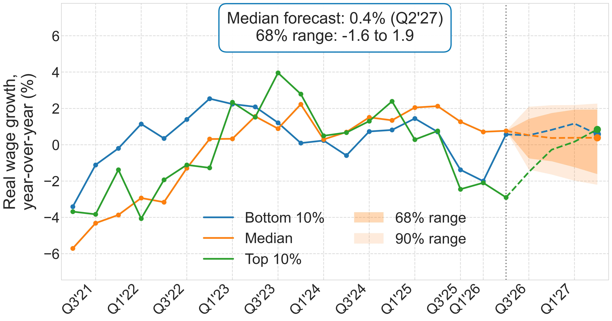

Where is the economy heading?
Twelve-month forecasts from a statistical model that combines the official data tracked on this page with other economic indicators.
Forecasts
The statistical model's best prediction for the year ahead, with shaded bands showing the range of likely outcomes, based on the model's historical accuracy.
Inflation forecast
Year-over-year change in consumer prices: recent history (solid) and the model's forecast for the next 12 months (dashed), with 68% and 90% likely ranges.

Unemployment forecast
The unemployment rate: recent history (solid) and the model's forecast for the next 12 months (dashed), with likely ranges.

Economic growth forecast
Growth of the US economy (real GDP, annualized rate): recent history and the model's forecast for the next four quarters.

Wage growth forecast
Inflation-adjusted growth of weekly pay for workers at the bottom (10th percentile), middle (median), and top (90th percentile) of the pay scale, with the likely range shown for the median.

Jobs
Unemployment rate
The share of people who want to work but don't have a job. Lower is (generally) better.

Jobs added each month
How many jobs the economy gained or lost versus the month before, in thousands. A healthy economy generally adds jobs most months.

Prices
How fast is the cost of living rising? Index charts show the change since January 2024 (start = 100), and the dollar charts show what things actually cost.
Consumer Price Index: All
Overall consumer prices. A value of 107 means prices are 7% higher than in January 2024.

Consumer Price Index: Medical care
The same measure, for medical care: doctor visits, hospital services, prescription drugs, and health insurance.

Grocery prices
Average prices of everyday staples: ground beef, milk, eggs, and bread.

Gas price
The average pump price of a gallon of regular unleaded gasoline.

Housing
Consumer Price Index: Housing
The cost of shelter (rent, homeowners' costs, utility), relative to January 2024.

Mortgage rate
The average rate on a new 30-year fixed mortgage. Lower rates make buying a home more affordable.

The national debt
What the federal government owes, and what the debt costs in interest payments.
Federal debt
Total debt of the US federal government, in trillions of dollars.

Interest on the debt
What the government paid in interest on its debt over the previous 12 months. Depends on both debt levels and interest rates.

Paychecks and the public mood
Inflation-adjusted pay
Hourly pay of typical private-sector workers (excluding managers), net of inflation.

Wages across the income distribution
Inflation-adjusted weekly pay of full-time workers near the bottom (10th percentile), middle (median), and top (90th percentile) of the pay scale, relative to early 2024.

Consumer confidence
How optimistic households feel about their finances and the economy, by income group. Higher means more optimistic.

Net sentiment about future business conditions
The share of people expecting good business conditions a year from now, minus the share expecting bad ones. Below zero, pessimists outnumber optimists.